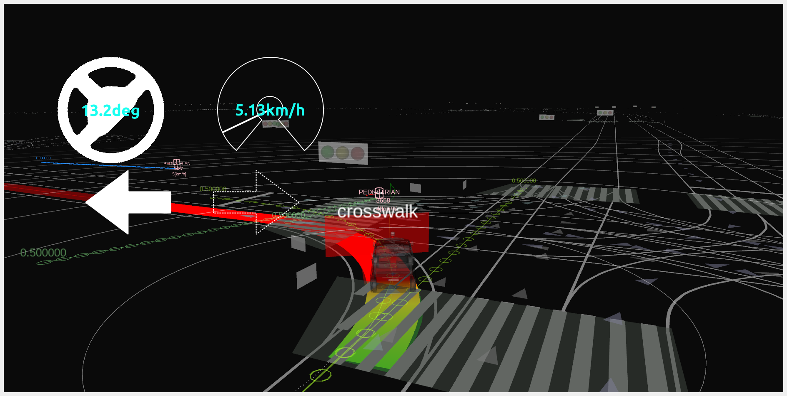
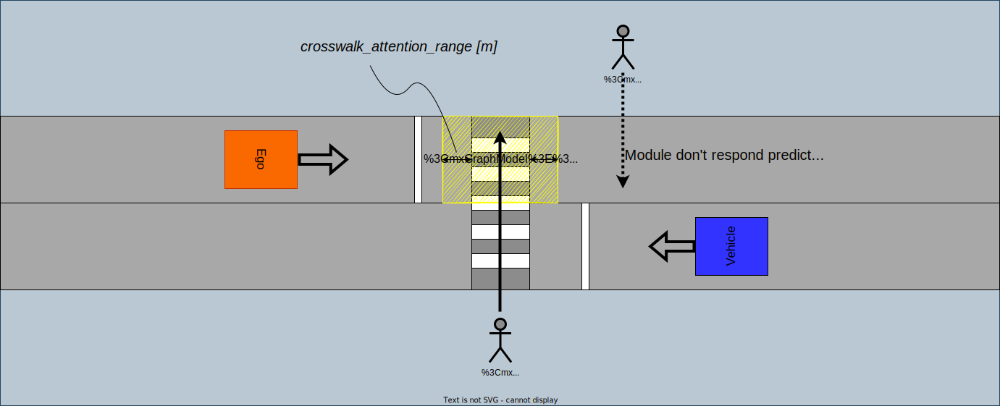
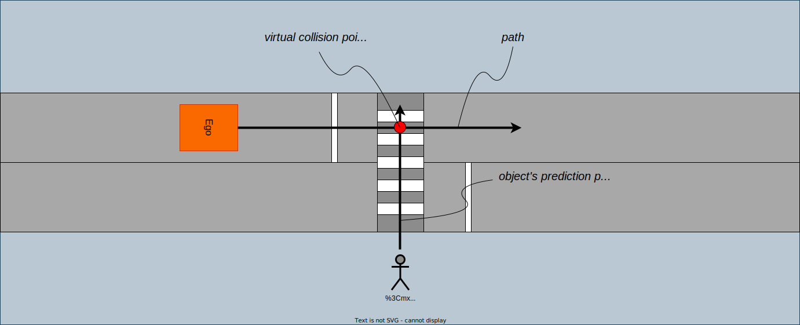

Index
Crosswalk#
Role#
This module judges whether the ego should stop in front of the crosswalk in order to provide safe passage of pedestrians and bicycles based on object's behavior and surround traffic.

Activation Timing#
The manager launch crosswalk scene modules when the reference path conflicts crosswalk lanelets.
Module Parameters#
Common parameters#
| Parameter | Type | Description |
|---|---|---|
common.show_processing_time |
bool | whether to show processing time |
Parameters for input data#
| Parameter | Type | Description |
|---|---|---|
common.traffic_light_state_timeout |
double | [s] timeout threshold for traffic light signal |
Parameters for stop position#
The crosswalk module determines a stop position at least stop_distance_from_object away from the object.
The stop line is the reference point for the stopping position of the vehicle, but if there is no stop line in front of the crosswalk, the position stop_distance_from_crosswalk meters before the crosswalk is the virtual stop line for the vehicle. Then, if the stop position determined from stop_distance_from_object exists in front of the stop line determined from the HDMap or stop_distance_from_crosswalk, the actual stop position is determined according to stop_distance_from_object in principle, and vice versa.

On the other hand, if pedestrian (bicycle) is crossing wide crosswalks seen in scramble intersections, and the pedestrian position is more than far_object_threshold meters away from the stop line, the actual stop position is determined to be stop_distance_from_object and pedestrian position, not at the stop line.
See the workflow in algorithms section.
| Parameter | Type | Description |
|---|---|---|
stop_position.stop_distance_from_object |
double | [m] the vehicle decelerates to be able to stop in front of object with margin |
stop_position.stop_distance_from_crosswalk |
double | [m] make stop line away from crosswalk when no explicit stop line exists |
stop_position.far_object_threshold |
double | [m] if objects cross X meters behind the stop line, the stop position is determined according to the object position (stop_distance_from_object meters before the object) |
stop_position.stop_position_threshold |
double | [m] threshold for check whether the vehicle stop in front of crosswalk |
Parameters for ego's slow down velocity#
| Parameter | Type | Description |
|---|---|---|
slow_velocity |
double | [m/s] target vehicle velocity when module receive slow down command from FOA |
max_slow_down_jerk |
double | [m/sss] minimum jerk deceleration for safe brake |
max_slow_down_accel |
double | [m/ss] minimum accel deceleration for safe brake |
no_relax_velocity |
double | [m/s] if the current velocity is less than X m/s, ego always stops at the stop position(not relax deceleration constraints) |
Parameters for stuck vehicle#
If there are low speed or stop vehicle ahead of the crosswalk, and there is not enough space between the crosswalk and the vehicle (see following figure), closing the distance to that vehicle could cause Ego to be stuck on the crosswalk. So, in this situation, this module plans to stop before the crosswalk and wait until the vehicles move away, even if there are no pedestrians or bicycles.
| Parameter | Type | Description |
|---|---|---|
stuck_vehicle.stuck_vehicle_velocity |
double | [m/s] maximum velocity threshold whether the vehicle is stuck |
stuck_vehicle.max_stuck_vehicle_lateral_offset |
double | [m] maximum lateral offset for stuck vehicle position should be looked |
stuck_vehicle.stuck_vehicle_attention_range |
double | [m] the detection area is defined as X meters behind the crosswalk |
Parameters for pass judge logic#
Also see algorithm section.
| Parameter | Type | Description |
|---|---|---|
pass_judge.ego_pass_first_margin |
double | [s] time margin for ego pass first situation |
pass_judge.ego_pass_later_margin |
double | [s] time margin for object pass first situation |
pass_judge.stop_object_velocity_threshold |
double | [m/s] velocity threshold for the module to judge whether the objects is stopped |
pass_judge.min_object_velocity |
double | [m/s] minimum object velocity (compare the estimated velocity by perception module with this parameter and adopt the larger one to calculate TTV.) |
pass_judge.timeout_no_intention_to_walk |
double | [s] if the pedestrian does not move for X seconds after stopping before the crosswalk, the module judge that ego is able to pass first. |
pass_judge.timeout_ego_stop_for_yield |
double | [s] the amount of time which ego should be stopping to query whether it yields or not. |
Parameters for object filtering#
As a countermeasure against pedestrians attempting to cross outside the crosswalk area, this module watches not only the crosswalk zebra area but also in front of and behind space of the crosswalk, and if there are pedestrians or bicycles attempting to pass through the watch area, this module judges whether ego should pass or stop.

This module mainly looks the following objects as target objects. There are also optional flags that enables the pass/stop decision for motorcycle and unknown objects.
- pedestrian
- bicycle
| Parameter | Type | Description |
|---|---|---|
crosswalk_attention_range |
double | [m] the detection area is defined as -X meters before the crosswalk to +X meters behind the crosswalk |
target/unknown |
bool | whether to look and stop by UNKNOWN objects |
target/bicycle |
bool | whether to look and stop by BICYCLE objects |
target/motorcycle |
bool | whether to look and stop MOTORCYCLE objects |
target/pedestrian |
bool | whether to look and stop PEDESTRIAN objects |
Inner-workings / Algorithms#
Stop position#
The stop position is determined by the existence of the stop line defined by the HDMap, the positional relationship between the stop line and the pedestrians and bicycles, and each parameter.
![uml diagram]()
Pass judge logic#
At first, this module determines whether the pedestrians or bicycles are likely to cross the crosswalk based on the color of the pedestrian traffic light signal related to the crosswalk. Only when the pedestrian traffic signal is RED, this module judges that the objects will not cross the crosswalk and skip the pass judge logic.
Secondly, this module makes a decision as to whether ego should stop in front of the crosswalk or pass through based on the relative relationship between TTC(Time-To-Collision) and TTV(Time-To-Vehicle). The TTC is the time it takes for ego to reach the virtual collision point, and the TTV is the time it takes for the object to reach the virtual collision point.

Depending on the relative relationship between TTC and TTV, the ego's behavior at crosswalks can be classified into three categories.
- TTC >> TTV: The objects have enough time to cross first before ego reaches the crosswalk. (Type-A)
- TTC TTV: There is a risk of a near miss and collision between ego and objects at the virtual collision point. (Type-B)
- TTC << TTV: Ego has enough time to path through the crosswalk before the objects reach the virtual collision point. (Type-C)
This module judges that ego is able to pass through the crosswalk without collision risk when the relative relationship between TTC and TTV is Type-A and Type-C. On the other hand, this module judges that ego needs to stop in front of the crosswalk prevent collision with objects in Type-B condition. The time margin can be set by parameters ego_pass_first_margin and ego_pass_later_margin. This logic is designed based on [1].
This module uses the larger value of estimated object velocity and min_object_velocity in calculating TTV in order to avoid division by zero.
![uml diagram]()
Dead lock prevention#
If there are objects stop within a radius of min_object_velocity * ego_pass_later_margin meters from virtual collision point, this module judges that ego should stop based on the pass judge logic described above at all times. In such a situation, even if the pedestrian has no intention of crossing, ego continues the stop decision on the spot. So, this module has another logic for dead lock prevention, and if the object continues to stop for more than timeout_no_intention_to_walk seconds after ego stops in front of the crosswalk, this module judges that the object has no intention of crossing and switches from STOP state to PASS state. The parameter stop_object_velocity_threshold is used to judge whether the objects are stopped or not. In addition, if the object starts to move after the module judges that the object has no intention of crossing, this module judges whether ego should stop or not once again.
Safety Slow Down Behavior#
In current autoware implementation if there are no target objects around a crosswalk, ego vehicle will not slow down for the crosswalk. However, if ego vehicle to slow down to a certain speed in such cases is wanted then it is possible by adding some tags to the related crosswalk definition as it is instructed in lanelet2_format_extension.md document.
Limitations#
When multiple crosswalks are nearby (such as intersection), this module may make a stop decision even at crosswalks where the object has no intention of crossing.
Known Issues#
Debugging#
By ros2 run behavior_velocity_crosswalk_module time_to_collision_plotter.py, you can visualize the following figure of the ego and pedestrian's time to collision.
The label of each plot is <crosswalk module id>-<pedestrian uuid>.
References/External links#
[1] , , , , , , 2013, 44 , 3 , p. 931-936.